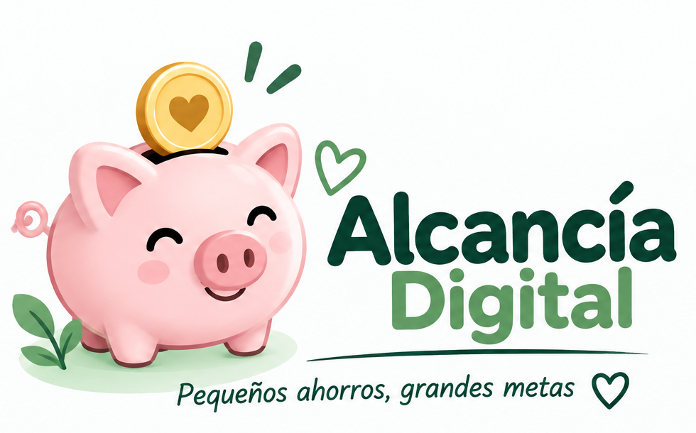

100 casillas · por casilla
Registrar ahorro
Resumen de la alcancía
Cantidad disponible por denominación.
🪙 Monedas: 0💵 Billetes: 0
Total disponible: —
Mis logros ✨
⚙️ Denominaciones
Puede usar monedas, billetes o ambos.
📜 Historial
Agregado: Retirado:
❓ Ayuda — ¿Cómo usar Alcancía Digital?
Solo necesita hacer tres cosas:
1. Escriba cuánto quiere ahorrar.
2. Registre el dinero que va guardando.
3. Mire cómo avanza hacia su meta.
Sus cambios se guardan automáticamente.
🎯 1. Elija cuánto quiere ahorrar
Su meta es la cantidad de dinero que desea alcanzar.
Ejemplo: si quiere ahorrar ₡100.000, escriba ₡100.000 como su meta. Puede cambiarla después.
🪙 2. ¿Qué significan las 100 monedas?
El tablero siempre tiene 100 monedas. No son monedas reales: sirven para mostrar cuánto ha avanzado.
Alcancía Digital divide su meta entre 100.
Ejemplo: ₡100.000 ÷ 100 = ₡1.000. Por eso, cada moneda del tablero representa ₡1.000 de su meta.
Si la meta es ₡500.000: ₡500.000 ÷ 100 = ₡5.000 por moneda.
Usted no tiene que hacer la cuenta. Alcancía Digital la hace por usted.
💰 3. Registre el dinero que guarda
Elija la moneda o billete, indique cuántos guardó y registre la entrada.
Ejemplo: 3 monedas de ₡500 = ₡1.500. Alcancía Digital suma ₡1.500 a su ahorro.
Si guardó diferentes monedas o billetes, puede registrarlos juntos con Todas.
💸 4. ¿Sacó dinero?
Regístrelo como retiro. Alcancía Digital lo restará y actualizará su progreso.
Ejemplo: si saca 2 monedas de ₡500, se restan ₡1.000.
No puede retirar más monedas o billetes de los que tenga registrados.
Puso dinero → Entrada ➕ | Sacó dinero → Retiro ➖
📖 5. ¿Se equivocó?
No necesita comenzar de nuevo. Vaya a Historial → Editar movimientos, busque el movimiento y elija Editar o Eliminar.
Ejemplo: si registró 3 monedas de ₡500 y eran 2, cambie 3 por 2. Alcancía Digital vuelve a hacer las cuentas.
🏆 6. ¿Llegó a su meta?
Puede seguir ahorrando aunque llegue al 100 %.
Ejemplo: meta ₡100.000 y ahorro ₡120.000: superó la meta por ₡20.000.
Puede continuar con esa meta o elegir una nueva.
🎯 7. ¿Quiere cambiar su meta?
Puede hacerlo sin perder lo que ya ahorró ni su historial.
Ejemplo: tiene ₡120.000 y cambia su meta a ₡200.000. Sus ₡120.000 siguen ahí; Alcancía Digital recalcula su progreso y el valor de las 100 monedas.
🏅 8. Logros y celebraciones
Alcancía Digital celebra sus avances al llegar a 25 %, 50 %, 75 % y 100 %.
Puede desactivar los sonidos. Los logros son motivación: no cambian su dinero.
🔐 9. Sus datos y seguridad
No tiene que guardar manualmente. Cada cambio se guarda automáticamente en este dispositivo y navegador.
Sus movimientos de ahorro no se guardan en GitHub ni en un servidor de Alcancía Digital.
Puede activar un PIN como protección adicional. Mantenga también protegido su teléfono.
📦 10. Copia de seguridad
Sirve para recuperar sus datos si algo ocurre: por ejemplo, si pierde o cambia el teléfono, se daña el dispositivo o se borran los datos del navegador.
Use Crear copia de seguridad y guarde el archivo en un lugar seguro, preferiblemente también fuera del teléfono, como OneDrive o Google Drive.
Para recuperar la información use Restaurar copia.
📄 11. Exportar mi Alcancía
Use 📄 Exportar para crear un documento con el resumen de su Alcancía: meta, ahorro, progreso, monedas, billetes e historial.
Puede conservar ese documento para consultarlo y, si lo desea, imprimirlo después.
Importante: Exportar crea un documento de consulta. No sustituye la copia de seguridad, que es la que permite recuperar sus datos.
📱 12. ¿Tengo que instalar Alcancía Digital?
No. Puede usarla directamente desde el navegador.
Si desea tenerla más a mano, use Instalar Alcancía Digital. Sus datos continuarán guardándose automáticamente en este dispositivo y navegador.
🎯 Ponga su meta
💰 Registre lo que guarda
💸 Registre lo que saca
🪙 Mire cómo avanza
📦 Haga una copia de seguridad de vez en cuando
🔒 Privacidad, seguridad y respaldo
Sus datos se guardan únicamente en su dispositivo. Alcancía Digital no solicita información personal ni envía sus registros de ahorro a ningún servidor.
El PIN agrega privacidad dentro de la app, pero no sustituye el bloqueo del teléfono. Si lo olvida, Alcancía Digital no puede enviarlo por correo.
Importante: guarde la copia fuera del teléfono para poder recuperar sus datos si cambia, pierde o daña el dispositivo.
ℹ️ Acerca de Alcancía Digital
🐷 Alcancía Digital
Pequeños ahorros, grandes metas.
Una herramienta sencilla para ayudarle a registrar sus ahorros y ver cómo avanza hacia su meta.
Versión: 4.3
Creada por: Aida Pérez Ceciliano
Desarrollada con asistencia de inteligencia artificial de OpenAI.
© 2026 Aida Pérez Ceciliano.
Privacidad: no requiere una cuenta y no almacena sus movimientos de ahorro en un servidor. Sus datos se guardan localmente en su dispositivo y navegador.